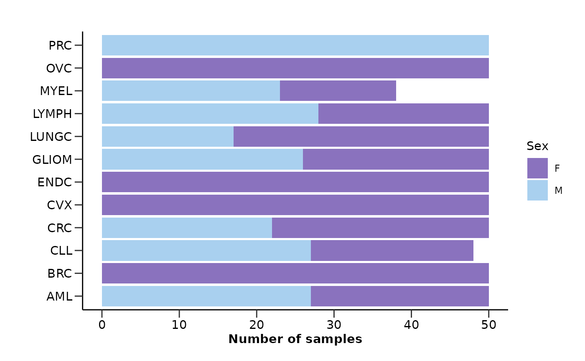
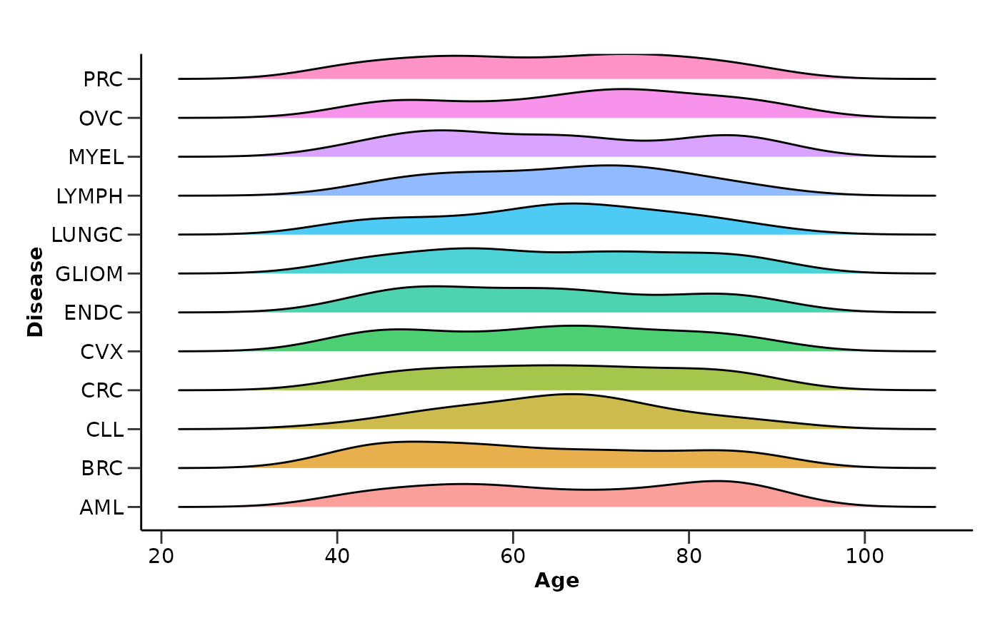
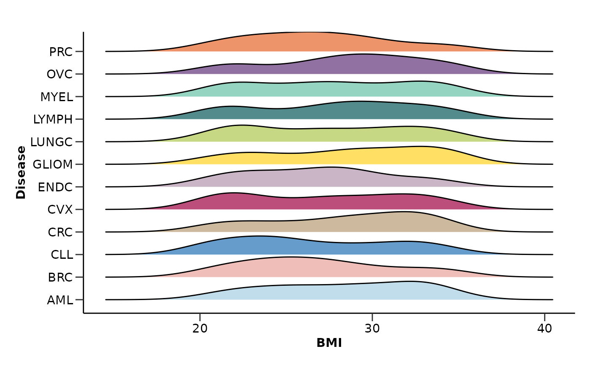

Summarize the quality control results of metadata
qc_summary_metadata.Rdqc_summary_metadata() summarizes the quality control results of the metadata dataframe.
It checks the column types, calculates the percentage of NAs in each column and row,
and creates summary visualizations for Sex, Age and BMI.
Arguments
- metadata
The metadata dataframe.
- disease_palette
The color palette for the plot. If it is a character, it should be one of the palettes from
get_hpa_palettes().- sex_palette
The color palette for the plot. If it is a character, it should be one of the palettes from
get_hpa_palettes(). Default is "sex_hpa".- report
Whether to print the summary. Default is TRUE.
Value
A list containing the following elements:
na_percentage_col: A tibble with the column names and the percentage of NAs in each column.
na_percentage_row: A tibble with the DAids and the percentage of NAs in each row.
sex_barplot: A bar plot for the number of samples per sex.
age_dist_plot: A ridge plot for the age distributions.
bmi_dist_plot: A ridge plot for the BMI distributions.
Examples
qc_res <- qc_summary_metadata(example_metadata)
#> [1] "Summary:"
#> [1] "Note: In case of long output, only the first 10 rows are shown. To see the rest display the object with view()"
#> [1] "Number of samples: 586"
#> [1] "Number of variables: 8"
#> [1] "--------------------------------------"
#> [1] "character : 7"
#> [1] "numeric : 2"
#> [1] "--------------------------------------"
#> [1] "NA percentage in each column:"
#> # A tibble: 1 × 2
#> column na_percentage
#> <chr> <dbl>
#> 1 Grade 91.5
#> [1] "--------------------------------------"
#> [1] "NA percentage in each row:"
#> # A tibble: 536 × 2
#> DAid na_percentage
#> <chr> <dbl>
#> 1 DA00001 11.1
#> 2 DA00002 11.1
#> 3 DA00003 11.1
#> 4 DA00004 11.1
#> 5 DA00005 11.1
#> 6 DA00006 11.1
#> 7 DA00007 11.1
#> 8 DA00008 11.1
#> 9 DA00009 11.1
#> 10 DA00010 11.1
#> # ℹ 526 more rows
#> [1] "--------------------------------------"
# Metadata distributions
qc_res$sex_barplot

qc_res$age_dist_plot
#> Picking joint bandwidth of 6

qc_res$bmi_dist_plot
#> Picking joint bandwidth of 1.82
